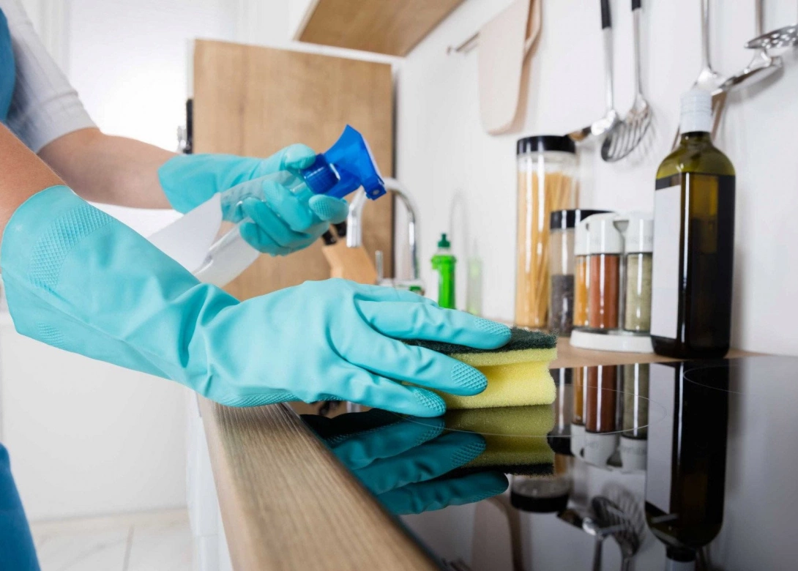
Отличное решение для быстрого поддержания чистоты в бытовых и коммерческих помещениях.
от 1000 руб.
Подробнее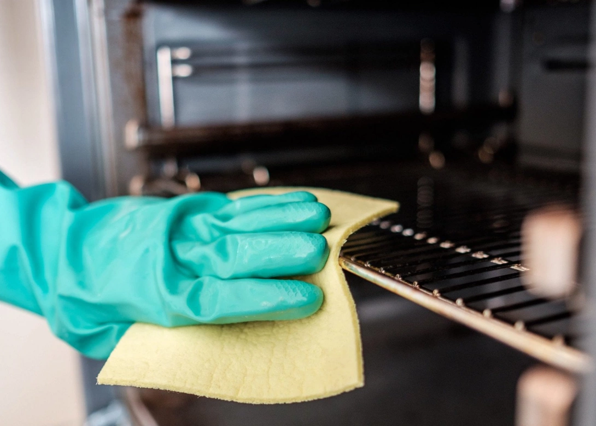
Генеральная уборка Обширный комплекс работ, направленный на максимальное удаление загрязнений от потолка до пола в бытовых и коммерческих помещениях.
от 10000 руб.
Подробнее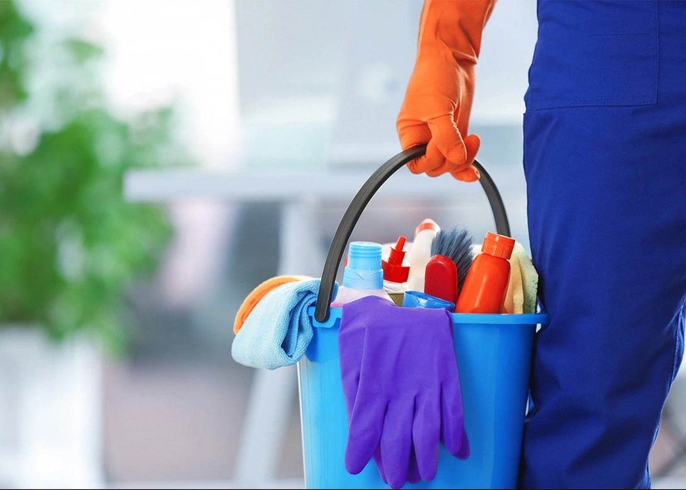
Наши профессиональные мастера полностью подготовят для Вас помещение, даже после самого капитального ремонта.
от 10000 руб.
ПодробнееПриведем в порядок Ваши окна - как от сезонных загрязнений, так и от трудновыводимых следов ремонта.
от 3000 руб.
Подробнее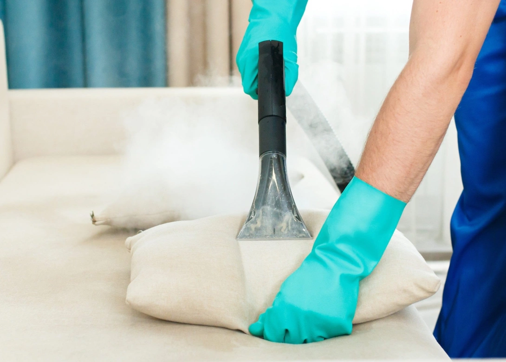
Чистка и удаление различных загрязнений с любых типов мягкой мебели.
от 3000 руб.
Подробнее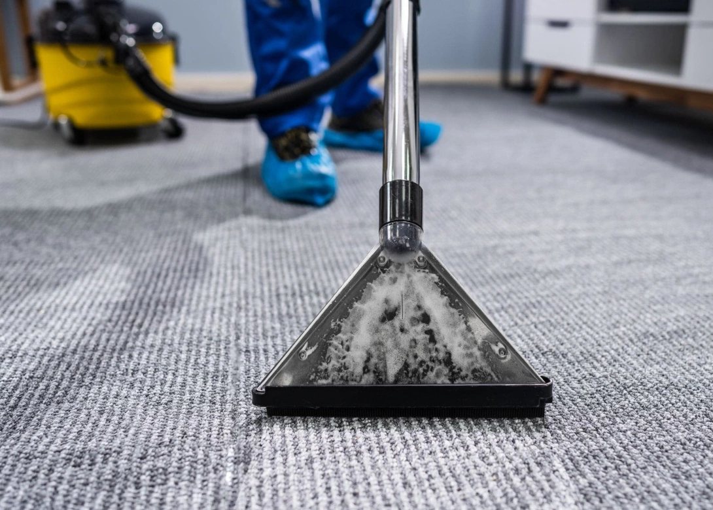
Общая чистка и удаление следов эксплуатации с текстильных напольных покрытий.
от 3000 руб.
ПодробнееРады приветствовать всех, кто уже стал и кому только предстоит стать пользователем клининговых услуг. Для начала давайте разберемся, что такое клининг и зачем это вообще нужно?
Клининг- сфера услуг, занимающаяся наведением чистоты и порядка в жилых, коммерческих, офисных, производственных помещениях. Так же клининг занимается уборкой мест общественного пользования, придомовых территорий, вывозом различных отходов (бытовых, строительных и даже вывозом снега).
Как вы уже поняли, клининг - Везде! Все вышеперечисленные места содержатся в чистоте, благодаря усилиям профессиональных сотрудников, вооруженных современным оборудованием и первоклассной химией. И все это замечательно, НО - когда большинство приходит домой - чистота и порядок в квартирах целиком ложится на хрупкие женские плечи. И тут мы спешим на помощь! Сама цель существования нашей клининговой компании - делать жизнь приятнее! Пробуйте наши услуги, наши комплексные решения вопросов чистоты и Вы забудете, что такое уборка!
Контроль качества на каждом этапе Контролируя соблюдение технологии уборки и качество исполнения каждого процесса, мы гарантируем самый лучший результат.
Богатый опыт работы в сфере клинига Наши сотрудники непрерывно совершенствуют свои навыки, что позволяет смело браться за самые сложные задачи.
Все сотрудники граждане РФ Все наши сотрудники исключительно граждане Российской Федерации.
Профессиональное оборудование В процессе уборки используется оборудование от лучшего мирового производителя - KARCHER.
Оплата после выполнения работ После выполнения уборки, вы принимаете нашу работу. Если есть какие-то замечания, мы все исправляем и только потом происходит оплата заказа.
Сертифицированная бытовая химия Даже если вы аллергик или болеете астмой, после нашей работы у вас не будет проблем. Мы за безопасные для здоровья средства.
Предлагаем ознакомиться с примерами проведенных клининговых работ
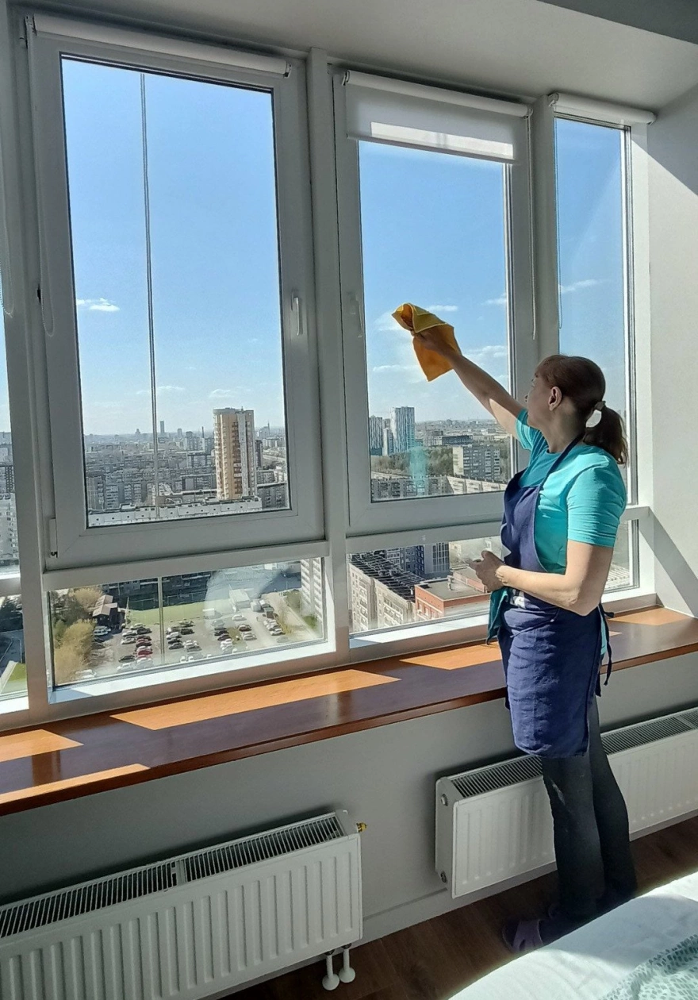
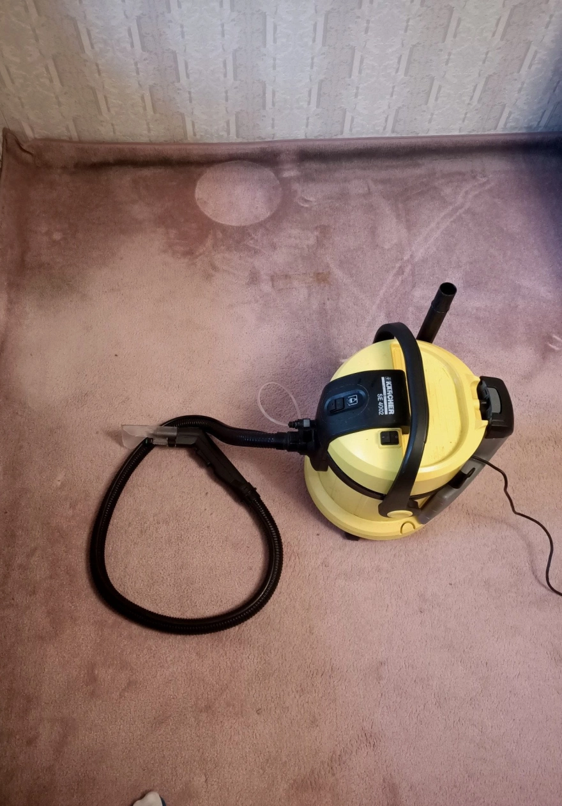
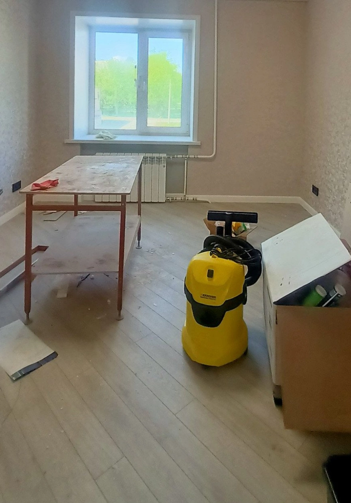
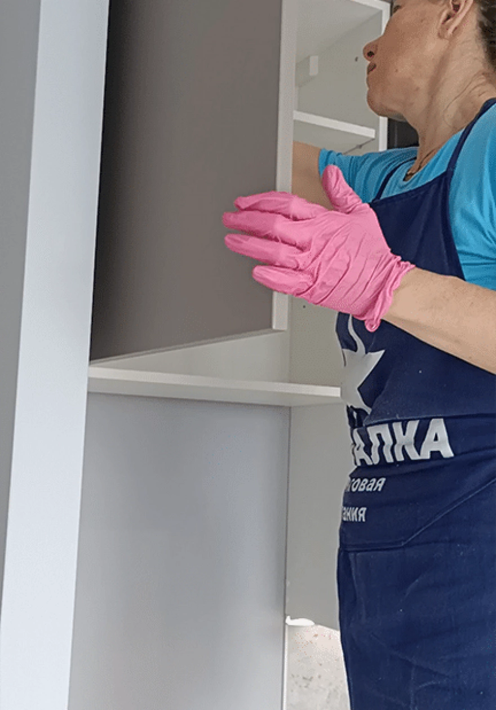
Нажимая на кнопку, Вы принимаете Положение и Согласие на обработку персональных данных.
| Наименование услуги | Стоимость услуг для новых клиентов |
| Регулярная уборка | 80 р. за кв. м. |
| Уборка после ремонта | 200 р. за кв. м. |
| Генеральная уборка | 220 р. за кв. м. |
| Мойка окон | от 2000 р. |
| Химчистка дивана | от 2000 р. |
| Химчистка матраса | от 800 р. |
| Удаление сложных пятен/запахов | от 400 р. |
Подробнее о стоимости наших услуг
Получить расчёт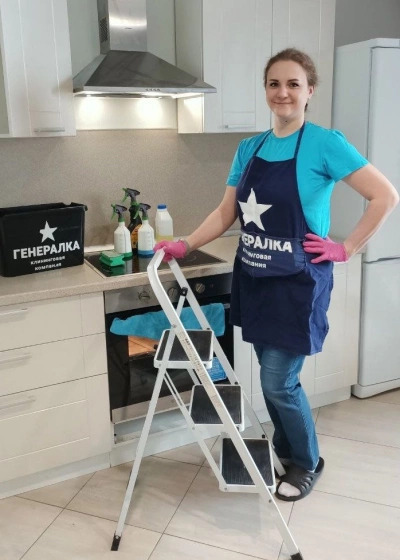
Бригадир команды клинеров. Осуществляет контроль качества выполняемой уборки
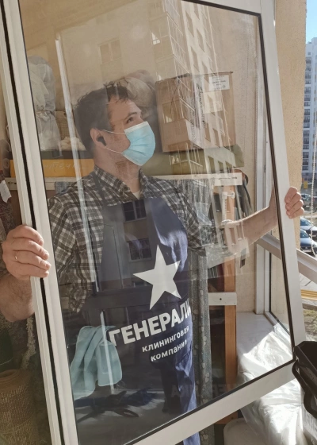
Технолог. Прорабатывает методики уборки, обучает бригадиров.
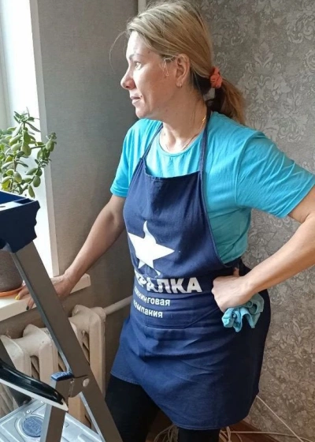
Бригадир команды клинеров. Осуществляет контроль качества выполняемой уборки./p>
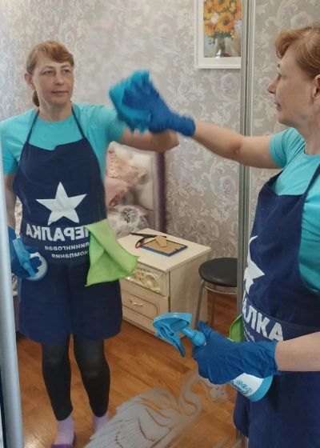
Бригадир команды клинеров. Осуществляет контроль качества выполняемой уборки.
Бытовая химия подбирается исходя из особенности каждого объекта. Учитываются такие факторы как: наличие деликатных поверхностей, особо сложные загрязнения, возможные ограничения по здоровью клиента, а так же безопасная химия для станций БИО очистки.
Уборка стоит от 2000 рублей в черте города. Далее стоимость уборки складывается из Ваших потребностей и объема работ. Наши менеджеры всегда готовы помочь Вам рассчитать стоимость уборки по телефону, WhatsApp, Телеграмм.
Длительность уборки сильно зависит от степени загрязнений и убираемой площади. Средняя продолжительность:
Количество клинеров всегда индивидуально, зависит от степени загрязнений и убираемой площади.
Предоставлять ничего не нужно. Наши клинеры всегда имеют при себе все оборудование, необходимое для выполнения уборки.
Во время уборки Ваше присутствие не требуется, Вы располагаете свободным временем с самого начала уборки и до момента принятия Вами выполненной работы.
Да! Мы работаем круглосуточно! Важный момент - всегда учитывайте шум от оборудования, включать пылесос или экстрактор для химчистки можно только до 23.00, либо в звукоизолированном помещении, а так же в частных домах
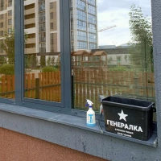
В зимнее время при заказе генеральной и уборки после ремонта, мыть окон с внутренней стороны для Вас будет абсолютно бесплатно.
Свяжитесь с нами
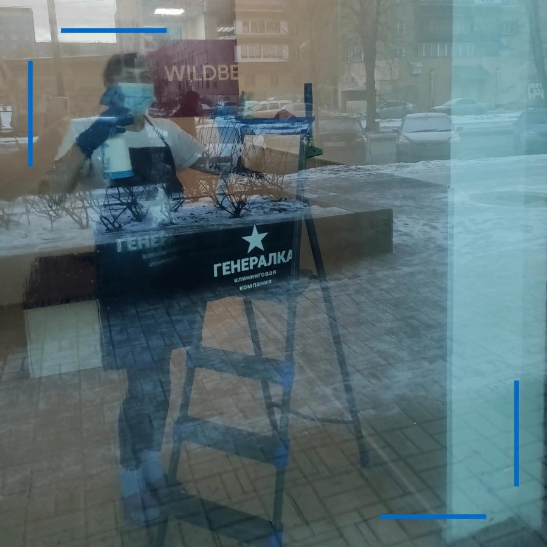